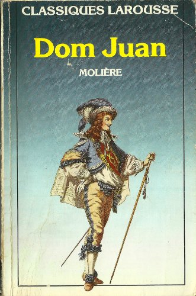
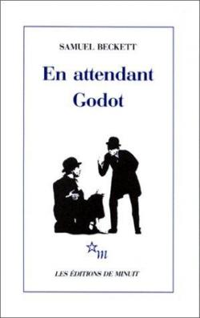
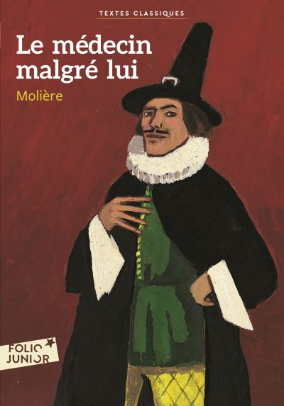
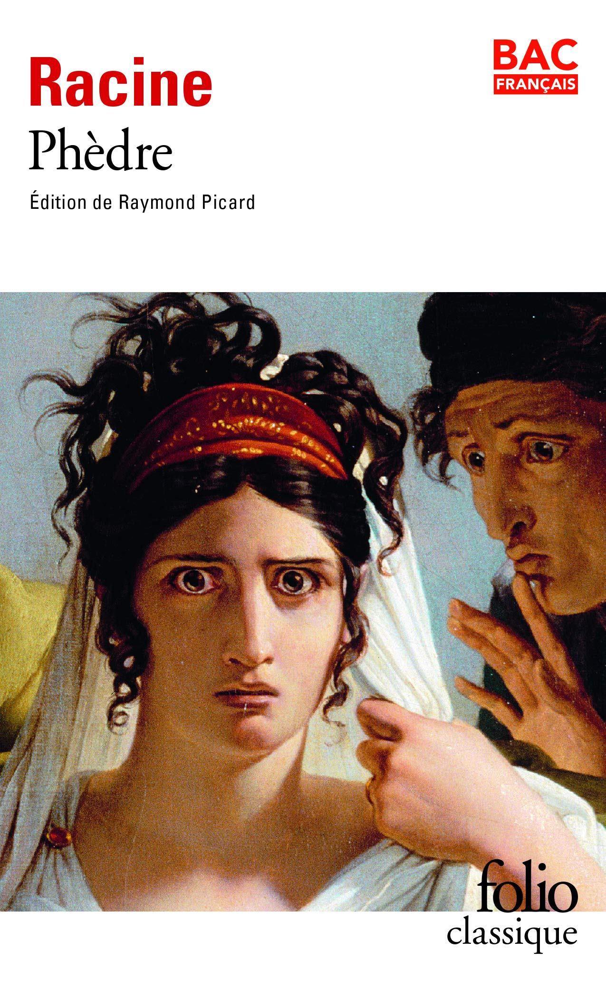

Blog de lecture
Lire c'est vivre dans un autre univers
"Le monde entier est un théâtre, Et tous, hommes et femmes, n'en sont que les acteurs. Et notre vie durant nous jouons plusieurs rôles."
William Shakespeare
-

Antigone
Jean Anouilh
Antigone est la fille d'Œdipe et de Jocaste (mère et épouse d'Œdipe), souverains de Thèbes. Après le suicide de Jocaste et l'exil d'Œdipe, les deux frères d'Antigone, Étéocle et Polynice, se sont entre-tués pour le trône de Thèbes. Créon, frère de Jocaste, est — à ce titre — le nouveau roi et a décidé de n'offrir de sépulture qu'à Étéocle et non à Polynice, qualifié de voyou et de traître. Il avertit par un édit que quiconque osera enterrer le corps du renégat sera puni de mort. Personne n'ose braver l'interdit et le cadavre de Polynice est abandonné au soleil et aux charognards. Seule Antigone refuse cette situation. Malgré l'interdiction de son oncle Créon, elle se rend plusieurs fois auprès du corps de son frère et tente de le recouvrir avec de la terre.
-

Dom Juan ou Le Festin de Pierre
Molière
Dom Juan est un seigneur libertin qui vient d'abandonner sa dernière épouse, Elvire, qu'il avait enlevé d'un couvent. Inconstant, il va de conquêtes amoureuses en conquêtes amoureuses et on le retrouve à séduire de jeunes paysannes en leur promettant le mariage.
-

En attendant Godot
Samuel Beckett
Préoccupé de peu de choses hormis ses chaussures, la perspective de se pendre au seul arbre qui rompt la monotonie du paysage et Vladimir, son compagnon d'infortune, Estragon attend. Il attend Godot comme un sauveur. Mais pas plus que Vladimir, il ne connaît Godot. Aucun ne sait au juste de quoi ce mystérieux personnage doit les sauver, si ce n'est peut-être, justement, de l'horrible attente. Liés par un étrange rapport de force et de tendresse, ils se haranguent l'un et l'autre et s'affublent de surnoms ridicules.
-

Le médecin malgré lui
Molière
Sganarelle, le faiseur de fagots, est dans de beaux draps : voici que par une ruse vengeresse, sa femme le fait passer pour médecin. Le vieux Géronte, qui l'a fait mander pour guérir sa fille, semble perplexe face aux explications de ce docteur peu orthodoxe Les cocasseries perpétuelles de Sganarelle et son charabia scientifique suffisent à tromper la crédulité de la patiente et de son entourage, pour notre plus grand bonheur. Et, pour comble de l'ironie, le faux médecin a affaire à une fausse malade...
-

Phèdre
Jean Racine
Phèdre, ce chef-d’oeuvre incontestable, pense-t-on encore qu'il n'en fut pas de plus contesté que celui-là ? « Faire un inceste en plein théâtre ! » s'indigne Pradon, rival malheureux de Racine devant la postérité. Phèdre « n'est ni tout à fait coupable ni tout à fait innocente », proteste l'auteur.Car elle est tout entière habitée par cette passion - sourde, aveugle, déraisonnable, exacerbée par sa déraison même - qu'elle entretient pour Hippolyte, passion qui ne peut mourir et ne mourra qu'avec elle.
-
Roméo et Juliette
William Shakespeare
Malgré la haine qui dévore les Capulet et les Montaigu, Roméo et Juliette succombent au coup de foudre lors d’un bal. Bravant la volonté de leurs familles, les jeunes amants décident de s’unir devant Dieu dans le plus grand secret. Mais les rivalités et les provocations entre clans redoublent : lorsque Tybalt, cousin de Juliette, tue Mercutio, ami de Roméo, ce dernier n’a d’autre choix que de le venger et de frapper à son tour Tybalt. Roméo est banni, mais Juliette justifie et pardonne son acte.